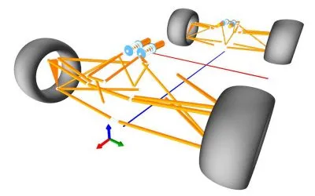

1ARG26 Suspension
ARG26 uses a double wishbone suspension at all four corners. Each corner has an upper and lower A-arm made from 4130 steel tube, welded on the jig plate so every link comes out at its designed geometry. The A-arms hold a machined upright, and camber is set with shims at the upright.
A push link runs from the lower A-arm up to a rocker on the chassis. The rocker turns the wheel's vertical travel into motion of an Öhlins TTX25 MKII damper with a Hyperco coil spring. Each rocker also drives a blade style anti-roll bar through a drop link, front and rear. The front wheels are steered by the steering link, and a toe link sets toe at the rear.
| Item | ARG26 |
|---|---|
| Suspension type | Double wishbone, front and rear |
| Spring and damper actuation | Push link and rocker, front and rear |
| Dampers | Öhlins TTX25 MKII |
| Springs | Hyperco FSAE coil springs |
| Anti-roll bars | Blade style, front and rear |
| Rear toe control | Toe link |
| Link material | 4130 steel tube |
| Wheelbase | 61 in |
| Design ride height | 1.5 in |
| Car weight without driver | 440 lb |